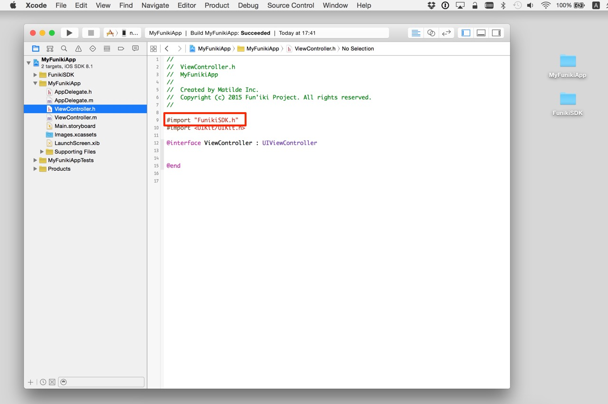

<!DOCTYPE html>
<html>
<head>
  <meta charset="UTF-8">
  <title>雰囲気メガネSDKをObjective-Cで使用する</title>
  <style type="text/css">
  <!--
  body { font-family: sans-serif}
  h1  { border-bottom: solid 1px #000000; }
  h2  {  }
  img { width: 50%; }
  pre { background-color: #EEEEEE; color: #000000; }
  -->
  </style>
</head>
<body>
  <h1>雰囲気メガネSDKをObjective-Cで使用する</h1>
  <p>
    雰囲気メガネSDKをObjective-Cのプロジェクトで使用するには<br />
    <strong>
      ・雰囲気メガネSDKの追加<br />
      ・ヘッダ・ファイルのimport<br />
    </strong>
    が必要です。
  </p>
  <h3>雰囲気メガネSDKの追加</h3>
  <p>
    - Xcodeで新規のプロジェクトを作成する。または、既存のプロジェクトを開く。<br />
    - Finderで「FunikiSDK」フォルダをドラッグして、Xcodeのプロジェクトにドロップする。<br />
    <br />
    <br />
    - 「Copy items if needed」にチェックをする。<br />
    - 「Add to targets」のアプリにチェックが入っていることを確認する<br />
    - 「Finish」をクリックする。<br />
    <br />
    <br />
    <br />
    <h3>ヘッダ・ファイルのimport</h3>
    - 雰囲気メガネSDKを使用するクラスの.hファイルを開く。(例えば、ViewController.h)<br />
    - 以下のコードを先頭に記述する。
  </p>
    <pre>

      #import "FunikiSDK.h"
    </pre>
  <p>
    </br />
    これで、Objective-Cのプロジェクトで雰囲気メガネSDKを使用する準備ができました。
  </p>
</body>
</html>
